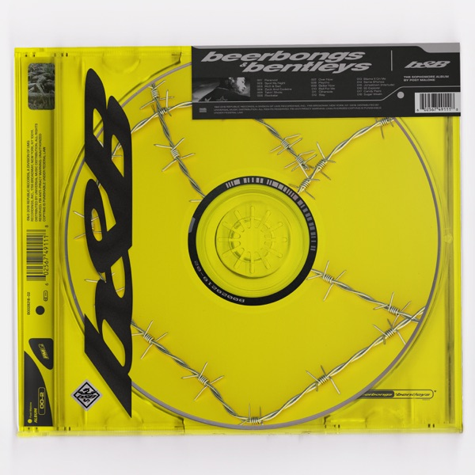

Beerbongs & Bentleys
Post Malone
Upgrade idea: This original 2018 Sterling Sound pressing is the definitive edition — no audiophile upgrade has been issued. Keep it.
- Original release
- 2018
- Pressing year
- 2018
- Country
- Europe
- Format
- 2× Vinyl LP, Album (Clear)
- Label / Cat#
- Republic Records – 00602567647577
- Genres
- Hip Hop, Pop
- Styles
- Cloud Rap, Trap, Pop Rap
- Discogs release
- 12700555
- Discogs master
- 1355120
- Apple Music
- beerbongs & bentleys
- Wikipedia
- Beerbongs & Bentleys
Production notes
Tracklist (Discogs)
| A1 | Paranoid | 3:44 |
| A2 | Spoil My Night | 3:27 |
| A3 | Rich & Sad | 3:23 |
| A4 | Zack And Codeine | 3:23 |
| A5 | Takin’ Shots | 3:37 |
| B1 | Rockstar | 3:29 |
| B2 | Over Now | 4:07 |
| B3 | Psycho | 3:41 |
| B4 | Better Now | 3:50 |
| B5 | Ball For Me | 3:27 |
| C1 | Otherside | 3:48 |
| C2 | Stay | 3:28 |
| C3 | Blame It On Me | 4:22 |
| C4 | Same Bitches | 3:31 |
| D1 | Jonestown (Interlude) | 1:51 |
| D2 | 92 Explorer | 3:22 |
| D3 | Candy Paint | 3:49 |
| D4 | Sugar Wraith | 3:47 |
Tracklist (Apple Music)
| 1 | Paranoid | 3:41 |
| 2 | Spoil My Night (feat. Swae Lee) | 3:14 |
| 3 | Rich & Sad | 3:26 |
| 4 | Zack and Codeine | 3:24 |
| 5 | Takin' Shots | 3:36 |
| 6 | rockstar (feat. 21 Savage) | 3:38 |
| 7 | Over Now | 4:06 |
| 8 | Psycho (feat. Ty Dolla $ign) | 3:41 |
| 9 | Better Now | 3:51 |
| 10 | Ball For Me (feat. Nicki Minaj) | 3:26 |
| 11 | Otherside | 3:48 |
| 12 | Stay | 3:24 |
| 13 | Blame It On Me | 4:21 |
| 14 | Same Bitches (feat. G-Eazy & YG) | 3:32 |
| 15 | Jonestown (Interlude) | 1:52 |
| 16 | 92 Explorer | 3:31 |
| 17 | Candy Paint | 3:47 |
| 18 | Sugar Wraith | 3:48 |
Personnel & credits
- Scott Stratton — Lacquer Cut By
- Mike Bozzi — Mastered By
Identifiers
- Barcode: 6 02567 64757 7 (Printed)
- Barcode: 602567647577 (Scanned)
- Label Code: LC 01846
- Rights Society: BIEM/SDRM
- Matrix / Runout: B0028490-01 A (Runout side A, etched)
- Matrix / Runout: 10-84977/B002849001-A 176875E1/A1 (Runout side A, stamped)
- Matrix / Runout: B0028490-01 B SS "!" (Runout side B, etched)
- Matrix / Runout: 10-84977/B002849001-B 176875E2/A (Runout side B, stamped)
- Matrix / Runout: B0028490-01 C (Runout side C, etched)
- Matrix / Runout: 10-84977/B002849001-C 176875E3/A2 (Runout side C, stamped)
- Matrix / Runout: B0028490-01 D SS (Runout side D, etched)
- Matrix / Runout: 10-84977/B002849001-D 176875E4/A1 (Runout side D, stamped)
Post Malone’s breakout second album (2018) — genre-fluid rap/pop/trap that broke streaming records. Produced by Louis Bell and Frank Dukes. Original pressing mastered at Sterling Sound (SS etching in Side B runout). Matrix 10-84977/B002849001 / 176875E1. The bass hits hard on vinyl; a better listen than streaming suggests.